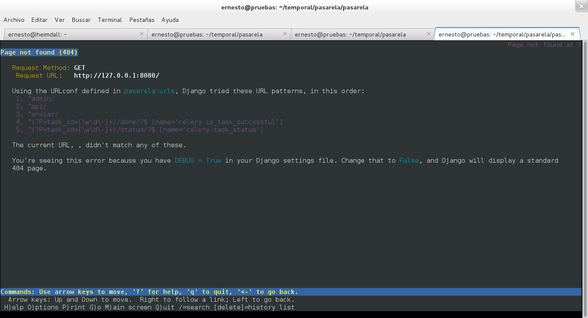
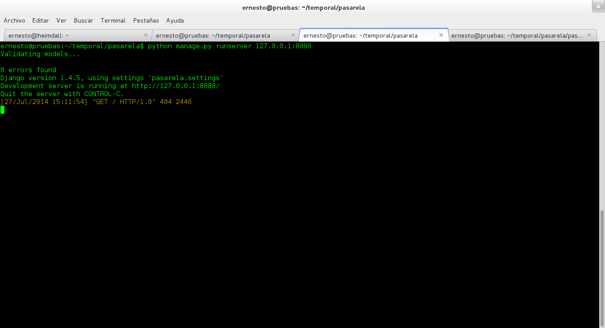
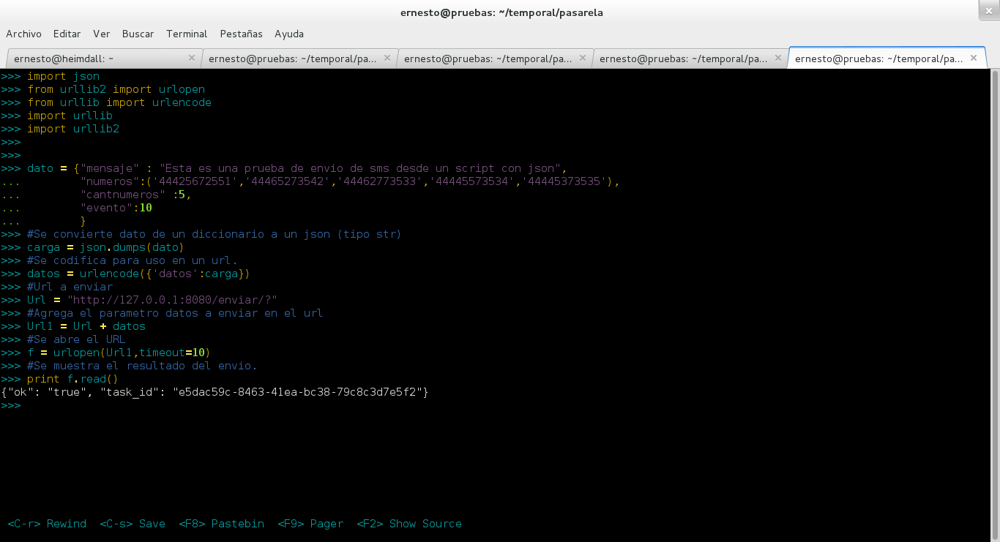
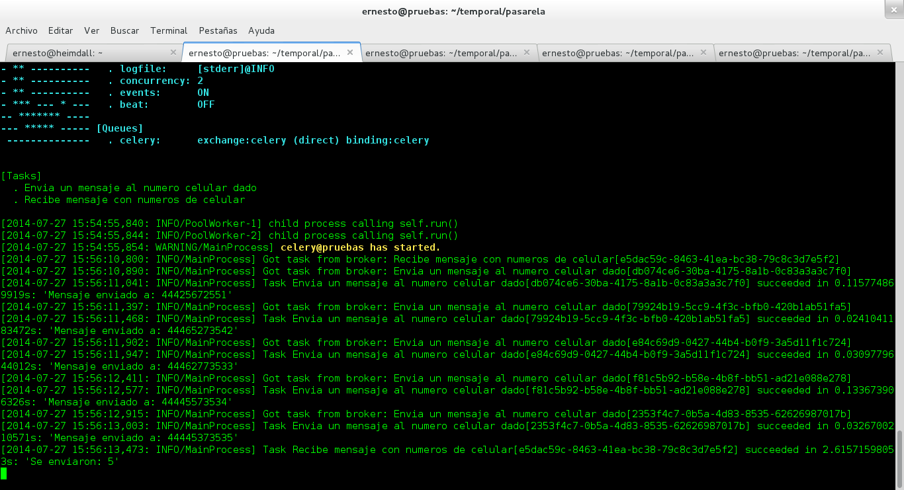
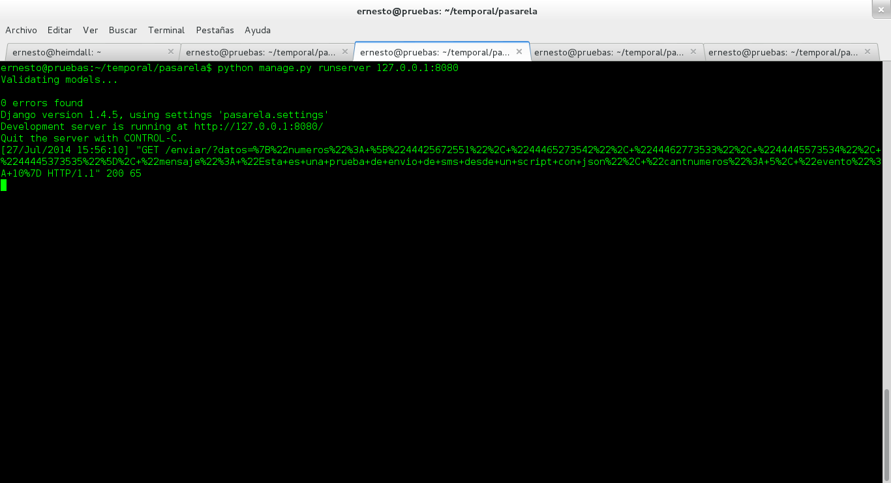

Tarea de Django-Celery desde un URL
Posted on mar 22 julio 2014 in Tutorial Python • 2 min read
En el artículo anterior (Restful API con Django-tastypie y Django-Celery) se mostró como pasarle datos a django desde su interprete de comandos, en este arículo se explicará como pasarlo desde el navegador o un script en python que lo haga por nosotros.
Recapitulando la parte del código que captura el url se maneja en el archivo urls.py que tiene lo siguiente: url(r'^enviar/', celery_views.task_view(tasks.RecNums)),
Al abrir el url http://127.0.0.1:8080/ se tiene la siguiente imagen de una captura de pantalla:

Como django está en modo debug nos muestra esa página, la cual dice los urls tienen que manejar el orden que se muestra (admin,api, enviar y los otros dos con identificación de procesos).
Django devuelve mensaje 404, como se muestra a continuación:

En el artículo anterior se uso el interprete de comandos de Django con el siguiente código:
>>>import json
>>>from pasarela.apps.sms.tasks import RecNums
>>>datos = '{"numeros": ["34225673531", "34265673531", "34365673531", "34245673531", "34345673531"], "mensaje": "xyzw", "cantnumeros": 5,"evento":6}'
>>>resultado = RecNums.delay(datos)
>>>resultado.get()
'Se enviaron: 5'
Como se ve, datos es un string que contiene entre llaves un conjunto de datos, lo que está entre las comillas es un diccionario de python, por esa razón cuando la función RecNums recibe datos convierte el string que en sí es un json, el cual pasa de ser un tipo str a un tipo dict:
>>>type(datos)
str
>>>diccionario = json.loads(datos)
>>>type(diccionario)
dict
Ahora bien, se tiene que el url a usar debería ser algo como: http://127.0.0.1/enviar/?datos= Donde lo que va luego del igual debería ser el jason que se está pasando a la función
( '{"numeros": ["34225673531", "34265673531", "34365673531", "34245673531", "34345673531"], "mensaje": "xyzw", "cantnumeros": 5,"evento":6}' ).
Este es el json, el problema que se tiene es que el url no está bien construído, para ello se mostrará en un script python como se abre el url pasandole el json (se muestra en la siguiente figura):

A continuación se muestra el log de celery donde se ve que procesa las tareas del envío de cada mensaje a su número celular respectivo:

Y para terminar se muestra el log de Django al recibir el URL que se paso en el script donde devuelve el código 200:

Así que para poder pasar por medio de un url sus parámetros se tiene que realizar una conversión a formato url de los datos que se tienen en el json.
¡Haz tu donativo! Si te gustó el artículo puedes realizar un donativo con Bitcoin (BTC) usando la billetera digital de tu preferencia a la siguiente dirección: 17MtNybhdkA9GV3UNS6BTwPcuhjXoPrSzV
O Escaneando el código QR desde la billetera: